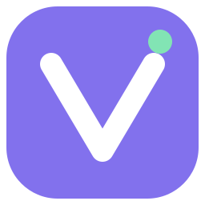
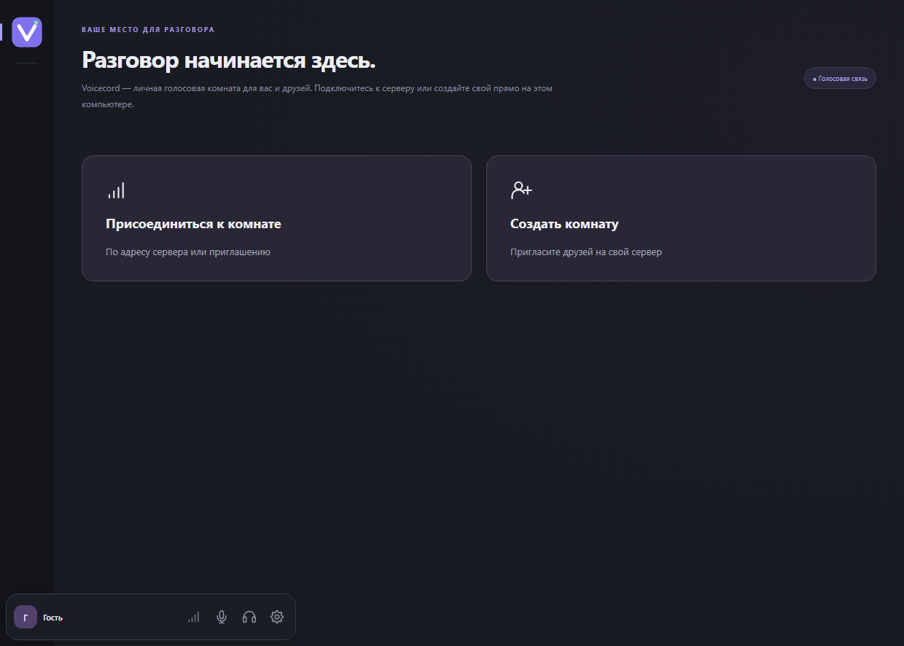

Host it yourself
Temporary rooms on a Windows PC, or a persistent Docker server on Linux amd64/arm64. Your guests just install the client.

VoicecordVoice chat for a game night or a small community. Create a room on your PC or keep it running on a Linux VPS. Join with an invitation and a nickname. No accounts.
0.1.0 public preview · Windows 10/11 x64 · App interface and detailed guides in Russian
Unsigned installer · Manual updates · Release notes, checksums and source

Temporary rooms on a Windows PC, or a persistent Docker server on Linux amd64/arm64. Your guests just install the client.
Local RNNoise noise suppression, echo cancellation and automatic gain control. Adjust devices, sensitivity and volume.
Voice activation or push-to-talk, global shortcuts, mute/deafen and per-person volume. Keep the app in the tray.
Install the Windows client on each PC. In Settings (Настройки), choose a nickname, select audio devices and test your microphone. No developer tools are needed.
Choose Create room (Создать комнату), enter a name and a password of at least 8 characters. The room stays up while the host app runs.
Share the full invitation privately. Your friend pastes it into Join room (Присоединиться к комнате). On the same network, use the LAN invitation.
Across the internet, the host needs reachable ports. Automatic port mapping may not work behind CGNAT. A Linux VPS with a public IP is an alternative. Read the full setup guide →
Choose your microphone and speakers, try noise suppression and listen to a microphone test before connecting.
Default hosting ports: TCP 18443, TCP 18444, UDP 18445. The server setup guide covers firewall and connectivity checks.

This is an early release. Real microphones, clean Windows installations, games/PTT, separate internet networks and full load still need hardware acceptance testing.
Windows desktop client only. Linux is a server platform. No text chat, video, screen sharing or released web/mobile client.
E2EE is optional and experimental. Transport encryption alone does not prevent the media server from accessing audio. Invitations can contain the password and E2EE key: keep them private. Read the security model.
For small, self-hosted voice rooms, that is the use case. Voicecord focuses on account-free conversations. It does not replace their broader community features.
Voice uses WebRTC through a LiveKit media server running on the host PC or your VPS. Guests need the Windows client, not their own server.
Check that the room is still running and the invitation is current. Use a LAN invitation on the same network. For internet access, check incoming ports, firewall, router forwarding and VPN. CGNAT may require a publicly reachable VPS. See network troubleshooting (Russian).
Updates are manual: download a new installer from GitHub Releases. Report bugs or ask setup questions in GitHub Issues. Include the version and reproduction steps; remove passwords, invitations and private network information.
The original code is licensed under GNU AGPL-3.0-only. Read the license and third-party notices for the terms that apply.